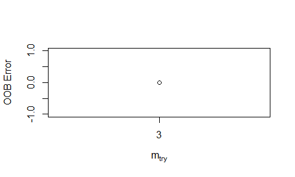

League of Legends Win Classifier¶
League of Legends, commonly abbreviated LoL, is a popular video game with millions of concurrent players. In its premier 5v5 competitive mode, the objective is to destroy the opposing team’s nexus. In this report, we will attempt to classify whether a given team wins or loses using measures of in-game performance.
A Brief Primer on LoL¶
In a LoL game, each player selects a unique champion to control for the
duration of the game, which is usually from 20-40 minutes. The goal is
to destroy the opposing team’s nexus, which are located on in the enemy
base protected by layers of towers which damage enemies that walk within
a certain radius. Minions spawn from each nexus and walk down one of the
three lanes on the game map and attack enemy minions, champions, and
towers.

Each player that occupies a lane (or jungle where neutral minions spawn) will kill enemy minions and enemy champions that give gold that can be used to buy items in their base that strengthen their champion. There are also two neutral objectives along the centerline of the map that grant teamwide buffs that make killing enemy minions, champions, and towers easier. There are three towers in each lane that must be destroyed in order from outermost to innermost. After the third and innermost tower of a lane is destroyed, the inhibitor is targetable in that lane. The destruction of the inhibitor causes the minions in that lane to become empowered and destroy enemy minions and towers with ease. The two nexus turrets also become targetable. When the nexus turrets go down, then the enemy nexus is vulnerable and the team that destroys the nexus wins. ## Research Question I am interested in investigating how beneficial variables such as enemy champion kills, vision, and experience are for League of Legends teams. My research question is this: How accurately can we classify a team as a winner or loser looking at the overall performance of the team?
I. Data¶
I obtained my data from kaggle. The data is from ranked League of Legends games from the three highest LoL ranks: Challenger, GrandMaster, and Master. These top three divisions comprise of the top 0.1% League players in the world (Christina Gough 2019).
The data comes in the form of three csv files. There is one csv file for each division: Challenger, Grandmaster, and Master. I have combined each of the csv files into the dataframe HighElo. Included in HighElo are 48 predictors with 24 being unique to each team, and then the variable gameDuraton which is equal for both teams. We exclude the column gameId as it has no bearing on the outcome of the game.We cam see that there are a total of 49 predictor variables, with 47 being integers and 2 being numeric.
| Rows | Columns |
|---|---|
| 185568 | 50 |
| Type | Frequency |
|---|---|
| integer | 47 |
| numeric | 3 |
| Missing Observations |
|---|
| 0 |
Because the original data does not account for game length for each metric, we will be creating new features that do that and visualize them in the Methods section. I have already added a column to convert the game duration to minutes which we will use to calculate metrics based on the difference in gold, champion damage, objective damage, and more per minute to equate for game length. We have also discarded all games less than 15 minutes as that is the earliest possible time a team can surrender. # III. Methods
Analysis Plan¶
My analysis plan is to use supervised machine learning to classify a given LoL team to the labels “Win” or “Lose”. Because this is a binary classification problem, I believe it would be appropriate to train a logistic regression model and a Random Forest models on the data. For the Logistic Regression Model, I will find the optimal threshold value for classification by calculating the smallest euclidean distance between (FPR, FNR) and (0, 0). For the Random Forest model, I will tune the parameter mtry using the function tuneRF(). My final model will be the lower of the validation error of 10-Fold Cross Validation on the Logistic Regression, or the Out-of-Bag error rate for the Random Forest (Cross-validation is not necessary since the Out-of-Bag error rate approximates the validation error).
I will randomly choose between whether I am classifying the binary win/loss outcome variable for blue side or red side. My response variable will be the binary outcome variable Win, which equals 1 if the selected team wins and 0 if they lose.
I made a 80/20 split for the Training and Test Sets, which leaves us with 148,454 observations in the training set and 37,114 observations in the test set.I designated a 50/50 split of the Training and Test sets analyzing the game from the blue side and red side. I then created new features GoldDiffPerMin, WardPlaceDiffPerMin,HealDiffPerMin, and other binary variables that only tracked the condition of the variable for the team chosen. I concatenated Blue and Red dataframes together to get my new Training and Test datasets.
#Training and Test splits
set.seed(1)
SampleIndex <- sample(1:nrow(HighElo),0.80*nrow(HighElo))
Train <- HighElo[SampleIndex,]
Test <- HighElo[-SampleIndex,]
# Sample 50% of games from blue side for training and test set
set.seed(2)
SampleBlueTrain <- sample(1:nrow(Train),0.5*nrow(Train))
SampleBlueTest <- sample(1:nrow(Test),0.5*nrow(Test))
#Create Blue training set and Red training set
BlueTrain <- Train[SampleBlueTrain,]
RedTrain <- Train[-SampleBlueTrain,]
# Combine Blue and Red Test sets back into one set using new predictors
Test <- rbind(BlueTest,RedTest)
# Create Train response and Train predictors
Test <- select(Test,MinGameDuration:Win)
Test$Win <- as.factor(Test$Win)
TestY <- select(Test, Win)
TestX <- select(Test, -Win)
Data Overview of new features¶
The basic attributes of the modified set of all the data are summarized below, along with the five-number summary of the continuous variables. I have summarized the counts of the binary variables as well. The average game time is 24.89 minutes. We can see that most of the predictors have long tails in their distributions.
## $MinGameDuration
## Min. 1st Qu. Median Mean 3rd Qu. Max.
## 15.00 20.08 24.37 24.89 29.27 62.63
##
## $GoldDiffPerMin
## Min. 1st Qu. Median Mean 3rd Qu. Max.
## -2196.7251 -357.7404 -0.5794 -0.2470 357.7043 2231.9337
##
## $WardPlaceDiffPerMin
## Min. 1st Qu. Median Mean 3rd Qu. Max.
## -9.728097 -0.326594 0.000000 0.001493 0.327154 11.766883
##
## $DamageDiffPerMin
## Min. 1st Qu. Median Mean 3rd Qu. Max.
## -6348.849 -559.068 1.429 0.784 562.967 6024.704
##
## $HealDiffPerMin
## Min. 1st Qu. Median Mean 3rd Qu. Max.
## -7057.366 -344.173 -2.328 -0.520 342.610 7670.970
##
## $ObjectDmgDiffPerMin
## Min. 1st Qu. Median Mean 3rd Qu. Max.
## -6899.430 -1293.020 1.104 -1.088 1288.071 7206.353
Here is a data overview of the new features created from the original data.
| Rows | Columns |
|---|---|
| 185568 | 11 |
| Type | Frequency |
|---|---|
| factor | 1 |
| integer | 4 |
| numeric | 6 |
| Missing Observations |
|---|
| 0 |
| FirstTower | FirstBaron | FirstInhibitor | FirstDragon | Win | |
|---|---|---|---|---|---|
| 0 | 92340 | 135932 | 115699 | 99770 | 92837 |
| 1 | 93228 | 49636 | 69869 | 85798 | 92731 |
I have created the boxplots of the response variable Win vs the continuous predictors to get infer their relationships to the response. From the boxplots it appears that GoldDiffPerMin and ObjectDmgDiffPerMin are usually higher for winning teams.

II. Model Building¶
Logistic Regression Model Building¶
I fit a Logistic Regression Model using the glm() function, to model the probability of Win on the predictors. The summary shows that all of the coefficients are positive except FirstTower and FirstBaron. This can be interpreted as meaning that the log-odds of winning are increased by all of our predictors except FirstTower and FirstBaron, where the log-odds of winning decrease when they are equal to 1. This goes against what we see in our initial visualizations of the data, where I plotted the response vs. the predictors, which showed that FirstTower and FirstBaron was more often 1 for the winning teams. It is possible the the estimates of the parameters of my Logistic Regression model are unstable, because the classes are well-separated; in particular, GoldDiffPerMin is a very good predictor of Win. After performing 10-Fold Cross Validation, my validation error is 1.51%.
##
## Call:
## glm(formula = Win ~ . - MinGameDuration, family = binomial, data = Train)
##
## Deviance Residuals:
## Min 1Q Median 3Q Max
## -7.4749 -0.0208 0.0000 0.0228 6.5889
##
## Coefficients:
## Estimate Std. Error z value Pr(>|z|)
## (Intercept) 7.861e-02 4.000e-02 1.965 0.0494 *
## GoldDiffPerMin 2.120e-02 2.329e-04 91.003 < 2e-16 ***
## WardPlaceDiffPerMin 1.715e-01 3.943e-02 4.350 1.36e-05 ***
## DamageDiffPerMin 2.524e-04 3.347e-05 7.542 4.62e-14 ***
## HealDiffPerMin 1.750e-04 3.620e-05 4.835 1.33e-06 ***
## ObjectDmgDiffPerMin 3.869e-04 3.081e-05 12.557 < 2e-16 ***
## FirstTower -1.014e+00 4.305e-02 -23.558 < 2e-16 ***
## FirstBaron -8.304e-01 4.560e-02 -18.210 < 2e-16 ***
## FirstInhibitor 1.317e+00 4.233e-02 31.118 < 2e-16 ***
## FirstDragon 2.268e-01 4.226e-02 5.368 7.95e-08 ***
## ---
## Signif. codes: 0 '***' 0.001 '**' 0.01 '*' 0.05 '.' 0.1 ' ' 1
##
## (Dispersion parameter for binomial family taken to be 1)
##
## Null deviance: 205801 on 148453 degrees of freedom
## Residual deviance: 17318 on 148444 degrees of freedom
## AIC: 17338
##
## Number of Fisher Scoring iterations: 9
## [1] "Cross Validation Error"
## [1] 0.01512488
Logistic Regression Model Analysis¶
First I plotted the predictors versus the estimated probabilities of the training data. It appears that past a positive threshold value of GoldDiffPerMin, the estimated probability is always about 1. For the other predictors, demonstrating that it is indeed a well-separated class. WardPlaceDiffPerMin is similar except past a positive threeshold value, the estimated probability of winning is 0.
In general, the estimated probability of winning is slightly higher for the teams that capture the First Baron, First Tower, and First Inhibitor.

I created an AUC graph and a ROC graph for the logistic regression on Win. From the performance() function we can see that the optimal threshold is 0.48, so we should set the threshold for predicting “Win” when the probability is more than to 0.48. We can see from the ROC curve that there is little tradeoff between tpr and fpr because the classifcation error rate is so low. The Area under the Curve is 99.7%. After setting the threshold value at 0.48, the test error rate for the Logistic regression is 1.88% which shows that our model is generalizing well to the test data, and not overfitting.


## [1] "Test Classification error for Logistic Regression"
## [1] 0.01880692
Random Forests Model Building¶
Using the randomForest() function, I fit a Random Forest model to my training data. We can see that the OOB estimate of error rate is 1.48%, which is a small improvement over the Logistic Regression validation error rate of 1.51%, and indicates that our model should not overfit and should generalize well to real data. The False Negative rate is 1.47% while the False Positive rate is 1.49%.
## [1] "Summary of rf.HighElo"
##
## Call:
## randomForest(formula = Win ~ . - MinGameDuration, data = Train, ntree = 250, importance = TRUE, mtry = 3)
## Type of random forest: classification
## Number of trees: 250
## No. of variables tried at each split: 3
##
## OOB estimate of error rate: 1.5%
## Confusion matrix:
## 0 1 class.error
## 0 73251 1093 0.01470193
## 1 1134 72976 0.01530158

I used the tuneRF() function to find an optimal value of mtry. Starting with the default of $mtry = \sqrt{p} = 3$, it looks 1 step in each direction to see if it offers enough of an improvement in OOB estimate of error. After running this function, the optimal value was 3. ## Random Forests Model Analysis
Looking at the variable importance plot and saw that GoldDiffPerMin was by far the most important variable in terms of both model accuracy and Gini index. WardPlaceDiffPerMin was the second most important in terms of model accuracy, while ObjectDmgDiffPerMin was second most important in terms of Gini index. Looking at the plot of the number of trees vs the OOB estimate of error rate, we can see that the OOB estimate of error rate stabilizes after about 75 trees and futher performance increases are minimal.
## [1] "Test Classification Error rate for Random Forest"
## [1] 0.01468449
Final Model¶
After comparing the validation error for the Logistic Regression model and the Out-Of-Bag error for the Random Forest Model, I choose the Random Forest Model for its higher accuracy. The final Random Forest model as a test error rate of 1.49%.
III. Conclusion¶
In conclusion, classifying the winning League of Legends team can be done well and it depends highly on how much gold a team has, how many more objectives a team does, and how many wards (which provide map vision) a team places. My model only classified 549 observations incorrectly out of 37,114 observations in the test set. However, I recommend for future projects to consider data that captures the state of the game at different poitns of time, to gain an idea of which variables are most beneficial to a team at different points of the game flow. My final model was
Limitations¶
The limitations of this study are that to win a game in League of Legends, a team has to win the final teamfight and kill most of the enemy team. Both nexus towers are usually destroyed right after this crucial teamfight, along with the nexus. In LoL, each tower destroyed grants global gold to the team. Therefore, it makes sense that GoldDiffPerMin would be such a strong predictor of our response variable, as this could result in a higher GoldDiffPerMin for the winning team. Another Limitation of this study is that it considers the top 0.1% of League of Legends players. These high-ranked players make much fewer mistakes than lower-ranked players. Therefore, they will rarely throwaway games where they have generated an advantage. This explains why are classifier is so good at classifygin “Win” or “Lose”, because generally generating a team advantage results in a win, reflecting the skill level of the best League of Legends players.
Future Research Directions¶
A similar project showed accuracy rates for end-of-=game data, with an accuracy rate of 98.09% for the logistic regression model and 97.77% for the Random Forest Model (Shayaan Jagtap 2018). Therefore, I know my results are sound. Future research directions should pursue the impact of champion selection on winning a game, for example, predicting whether a team will win or lose based on the pre-game champion selection. In the competitive League of Legends scene, emphasis is placed on champion synergies and counters. Assuming equal matchmaking, it would be interesting to see how the result of the game is decided before the game has even started.
IV. References¶
V. Appendix¶
# How the new features were created
# Feature Creation for Blue and Red Training sets
BlueTrain <- mutate(BlueTrain, GoldDiffPerMin = (blueTotalGold -
redTotalGold)/MinGameDuration,
WardPlaceDiffPerMin = (blueWardPlaced -
redWardPlaced)/MinGameDuration,
DamageDiffPerMin = (blueChampionDamageDealt -
redChampionDamageDealt)/MinGameDuration,
HealDiffPerMin = (blueTotalHeal -
redTotalHeal)/MinGameDuration,
ObjectDmgDiffPerMin = (blueObjectDamageDealt -
redObjectDamageDealt)/MinGameDuration,
FirstTower = blueFirstTower,
FirstBaron = blueFirstBaron,
FirstInhibitor = blueFirstInhibitor,
FirstDragon = blueFirstDragon,
Win = blueWins)
RedTrain <- mutate(RedTrain, GoldDiffPerMin = (redTotalGold -
blueTotalGold)/MinGameDuration,
WardPlaceDiffPerMin = (redWardPlaced -
blueWardPlaced)/MinGameDuration,
DamageDiffPerMin = (redChampionDamageDealt -
blueChampionDamageDealt)/MinGameDuration,
HealDiffPerMin = (redTotalHeal -
blueTotalHeal)/MinGameDuration,
ObjectDmgDiffPerMin = (redObjectDamageDealt -
blueObjectDamageDealt)/MinGameDuration,
FirstTower = redFirstTower,
FirstBaron = redFirstBaron,
FirstInhibitor = redFirstInhibitor,
FirstDragon = redFirstDragon,
Win = redWins)
BlueTest <- mutate(BlueTest, GoldDiffPerMin = (blueTotalGold -
redTotalGold)/MinGameDuration,
WardPlaceDiffPerMin = (blueWardPlaced -
redWardPlaced)/MinGameDuration,
DamageDiffPerMin = (blueChampionDamageDealt -
redChampionDamageDealt)/MinGameDuration,
HealDiffPerMin = (blueTotalHeal -
redTotalHeal)/MinGameDuration,
ObjectDmgDiffPerMin = (blueObjectDamageDealt -
redObjectDamageDealt)/MinGameDuration,
FirstTower = blueFirstTower,
FirstBaron = blueFirstBaron,
FirstInhibitor = blueFirstInhibitor,
FirstDragon = blueFirstDragon,
Win = blueWins)
RedTest <- mutate(RedTest, GoldDiffPerMin = (redTotalGold -
blueTotalGold)/MinGameDuration,
WardPlaceDiffPerMin = (redWardPlaced -
blueWardPlaced)/MinGameDuration,
DamageDiffPerMin = (redChampionDamageDealt -
blueChampionDamageDealt)/MinGameDuration,
HealDiffPerMin = (redTotalHeal -
blueTotalHeal)/MinGameDuration,
ObjectDmgDiffPerMin = (redObjectDamageDealt -
blueObjectDamageDealt)/MinGameDuration,
FirstTower = redFirstTower,
FirstBaron = redFirstBaron,
FirstInhibitor = redFirstInhibitor,
FirstDragon = redFirstDragon,
Win = redWins)
Christina Gough. 2019. “Distribution of League of Legends (Lol) Summoners in North America as of November 2019, by Tier.” https://www.statista.com/statistics/807298/league-of-legends-player-tier/.
Shayaan Jagtap. 2018. “How We Trained a Machine to Predict the Winning Team in League of Legends.” https://medium.com/trendkite-dev/machine-learning-league-of-legends-victory-predictions-8bc6cbc7754e.